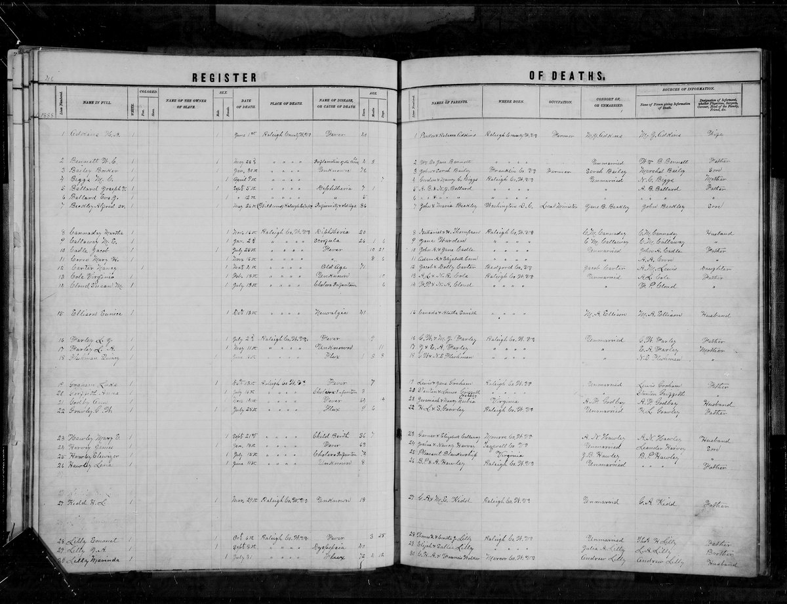

Walker line · Pemberton, Raleigh County, West Virginia
Profile status: SUPPORTED
Quick Facts
Born
19 March 1816, Mercer County, Virginia (now West Virginia) SUPPORTED (register-age arithmetic: 31 July 1888 minus 72 years 4 months 12 days is 19 March 1816 exactly, and the FamilySearch index independently gives an estimated birth year of 1816. The old compiled account’s 23 March 1815 is contradicted on age — it would make her 73 years 4 months 8 days at death. Mercer County was formed in 1837 from Giles and Monroe, so the old compiled account’s “Giles County” and the register’s “Mercer County” describe the same ground)
Died
31 July 1888, Raleigh County, West Virginia, age 72 DOCUMENTED (Raleigh County Register of Deaths, v1 p46, line 30, image read directly: cause Flux, age 72y 4m 12d, parents “C. H. A. & Francis Walker”, born Mercer Co., informant Andrew Lilly, her husband)
Married
Andrew H. Lilly, about 1839 UNPROVED (WikiTree only; no record found. The first documented child, Sarah Frances, dates to about 1845, so the marriage could be as late as about 1844)
Buried
Pemberton Cemetery, Pemberton, Raleigh County, West Virginia SUPPORTED (memorial 51580150; the stone reads “MARINDA / Wife of / Andrew Lilly / Born / Mar. 19, 1816 / Died / July 31, 1888”)
Name
“Marinda,” not “Marinda Cordelia” SUPPORTED (the stone reads only “MARINDA.” “Cordelia” is unproved — Geni’s “Marinda Marinda Cordelia” is not adopted)
Supported by Johnston 1906, p. 449, read directly — “Frances, who married Captain Christianos H. A. Walker, son of Charles”, daughter of John Peters — and corroborated by the 1836 Giles County court minute naming “Frances Walker” among John Peters’s heirs, and by Marinda’s own death register, which names her parents “C. H. A. & Francis Walker.” Christianos served in the War of 1812 in the 4th Regiment, Virginia Militia — his rank was Sergeant, proved by the M602 compiled-service card (“Walker, C. H. Amos,” roll 217); “Captain” is Johnston’s usage, contradicted as a service rank. The card carries no dates, so it does not decide the marker-date reading (“9-11-1813” / “3-10-1814”, read two ways); the 11 September 1813 volunteer date and the 30 October 1813 muster roll support the month-first reading, not proved. The “now or never!” elopement tale is unbacked tradition with an unidentified original, and is not stated here as fact. Christianos as a justice of the peace or prominent citizen rests on that same forum post alone and is unproved. Frances’s death is open: Geni’s stone reading gives “1794–1877” against Find a Grave’s “1794–1884” (died 7 April 1884) — neither is stated here as settled. The full conflicts are in Research Notes.
Spouse
Andrew H. Lilly (24 December 1823 – 27 December 1895), married about 1839 UNPROVED
Her only husband. The marriage date is WikiTree only; no record has been found. Andrew married again after her death, to Elizabeth A. Sesler, 23 August 1894. Marinda died 31 July 1888, Raleigh County, cause Flux, age 72 — the death register image was read directly.
Children
Sarah Frances Lilly Smith (born about 1845; died January 1880, Richmond, Virginia; married John Alex Smith) UNPROVED Valeria Margaret Lilly (born 4 October 1846; died 3 July 1887, Gales Creek, Oregon; married James Pisarius Lilly) UNPROVED Julia A. Lilly (born about 1850; married Edmond Lilly 23 March 1872) SUPPORTED Nancy Elizabeth Lilly Souder (born about 1850; died 25 March 1885, Pemberton; married Richard Jefferson Souder 6 February 1873) SUPPORTED Vashti / Vashie Lavina Lilly Plumley (born about 1853; died 1874; married George Washington Plumley 16 January 1873) SUPPORTED Mary Ellen Lilly Griffith (born about 1853; died 1880; married John H. Griffith 20 October 1871) SUPPORTED Marinda Celia Lilly (born 6 July 1854, Wyoming County; died 26 June 1923, Beckley; married William Jacob Canaday 25 September 1878) SUPPORTED Emily Jane Lilly Sesler (born 1856; married Samuel William Sesler 3 June 1875) SUPPORTED Juliana Olive Lilly Hawley (born 1858; died 4 October 1941, Raleigh County; married John Barnett Fleming Hawley 1875) SUPPORTED
Nine daughters, no sons. Marinda Celia is the direct line — her parentage is now register-supported by the Wyoming County birth register (row #14, read directly: father Andrew Lilly, mother Marinda Lilly), not a tree reconstruction; her death rests on the stone and the obituary only, since no 1923 death certificate exists. FamilySearch IDs: Sarah Frances (no FS ID verified this pass); Valeria Margaret L8MV-CH2; Julia Ann GWVQ-G8R; Nancy Elizabeth L8MV-CVD; Vashti GNXL-11H; Mary Ellen L8MV-CP3; Marinda Celia L79R-ZHD; Emily Jane L4FT-VR8; Juliana Olive L4Q4-V15. Geni links eleven children — a duplicate Nancy Elizabeth and a Linda — and no Octavia. FamilySearch lists twelve children, adding two infants who died in December 1859 (Infant Lilly K64T-SC4, male; Lilly MZJN-TKR, female), Elizabeth Victoria Lilly GPPQ-71R (born 1860, died December 1860), and Linda Lilly GPRL-P46 (born 1862). None of those four appears in any census: the 1860 household holds eleven people, the 1870 household ten, and the 1880 household is Andrew 56, Marinda 65, and grandson James E. Plumley 6. Linda is not carried here as a proven daughter, and Octavia is not carried as a separate tenth daughter — see Research Notes. Three daughters are parentage-proved at transcript level: Julia A., Mary Ellen, and Nancy Elizabeth are each entered in the Raleigh County marriage transcript as “d/o Andrew/Marinda”.
Siblings
Emily Miranda Walker Meador (1812–1896; married Green Washington Meador) SUPPORTED John Wise Council Walker (1812–1905) UNPROVED Christian Walker (1822–1870) UNPROVED Narcissa Walker Cooper (1823–1895) UNPROVED Numa Dink / Newman Dink Walker (1829–1884) UNPROVED Underwood Walker (1831–1862) UNPROVED Frances Walker Lilly (1834–1865) UNPROVED Valeria E. Walker Lilly (1838–1895) UNPROVED
As listed on Christianos’s WikiTree profile (Walker-16078) — tree-level reconstruction, except Emily Miranda, who is SUPPORTED as Marinda’s sister: WikiTree Walker-21046 names her as Christianos × Frances’s daughter and Marinda’s sister, with census corroboration on her page. The old compiled account’s “Marinda married Green Meador” is a sister-swap — it was Emily Miranda who married Green Meador, not Marinda. Loose ends, not folded into the sibset: Muhulda / Mahulda Walker-Lambert-Lester (born about 1818) is named as a sister on Numa’s page and in the old compiled account, but is absent from Christianos’s children list (C30); Valoris Walker (1826) against Valeria E. Walker Lilly (1838–1895) — one person or two, not merged and not split (C31); Emily and Council are both dated 1812 — twins, or a date error; and a Valeria (Walker) Lilly, 1776–1865, as Christianos’s daughter is impossible (Frances was born 1794) and is not carried (C36).
19 March 1816 · age 0
Born, Mercer County, Virginia (now West Virginia) SUPPORTED (register-age arithmetic from the death register; the old compiled account’s 23 March 1815 is contradicted on age)
About 1839
Married Andrew H. Lilly UNPROVED (WikiTree only; no record found — the marriage could be as late as about 1844)
About 1845–1858
Nine daughters born, all in Virginia: Sarah Frances about 1845, Valeria Margaret 1846, Julia A. about 1850, Nancy Elizabeth about 1850, Vashti about 1853, Mary Ellen about 1853, Marinda Celia 6 July 1854, Emily Jane 1856, Juliana Olive 1858 SUPPORTED (censuses and the marriage transcript; Marinda Celia’s birth is register-supported — the birth register, row #14, names both parents)
6 July 1860 · age 44
Census, Head of Piney, Raleigh County, Virginia: Marinda 45, with Andrew 35 and nine children at home DOCUMENTED (image read; eleven people in the household; no Linda, no Octavia)
22 August 1870 · age 54
Census, Town District, Raleigh County: Marinda 50, keeping house, with Andrew 46 and eight children DOCUMENTED (image read; ten people)
24 June 1880 · age 64
Census, Town District, Raleigh County: Marinda 65, keeping house, with Andrew 56 and grandson James E. Plumley 6 DOCUMENTED (image read; no daughter remained at home)
31 July 1888 · age 72
Died, Raleigh County, cause Flux, age 72y 4m 12d DOCUMENTED (Register of Deaths, v1 p46, line 30, image read; informant Andrew Lilly, her husband)
Burial
Pemberton Cemetery, Pemberton, Raleigh County SUPPORTED
Life Story
Marinda Walker was born 19 March 1816 in what was then Giles County, Virginia — ground that became Mercer County in 1837 — the daughter of Christianos H. A. Walker and Frances Peters, and died 31 July 1888 in Raleigh County, West Virginia, aged 72, of flux, buried at Pemberton beside her husband. Her birth date is derived, not stated: the death register gives her age as 72 years 4 months 12 days, and 31 July 1888 minus that span is 19 March 1816 exactly. The old compiled account’s 23 March 1815 is contradicted on that same age. Her stone reads “MARINDA / Wife of / Andrew Lilly / Born / Mar. 19, 1816 / Died / July 31, 1888” — no middle name, and none is given here.
She married Andrew H. Lilly about 1839 — the date is WikiTree only, and the first documented child dates to about 1845 — and they had nine daughters and no sons. The censuses trace the household: 1860 at Head of Piney, Marinda 45 with nine children at home from Sarah, 15, down to Olive, 2; 1870 in Town District, Marinda 50, keeping house, with eight children; 1880, Marinda 65, with Andrew 56 and their six-year-old grandson James E. Plumley, and no daughter left at home. Her daughter Marinda Celia carries the line, marrying William Jacob Canaday in 1878 — and her parentage, long carried as a tree reconstruction, is now supported by a record: the Wyoming County birth register for 6 July 1854 names her father Andrew Lilly and her mother Marinda Lilly outright.
Her father Christianos was a sergeant in the 4th Regiment, Virginia Militia, in the War of 1812 — the compiled-service card proves the rank, and the “Captain” of the histories is later usage, not his service rank. The family tale of his elopement with Frances Peters — the girl outrunning her brothers to cry “now or never!” at his door — is unbacked tradition with an unidentified original, and this page does not state it as fact; what the records do give is Johnston’s history naming Frances as John Peters’s daughter and Christianos’s wife, and a Giles County court minute of 1836 naming “Frances Walker” among John Peters’s heirs. Marinda’s own death register names her parents as “C. H. A. & Francis Walker,” and her husband Andrew was the informant. No portrait of her has been found anywhere; the stone is the only image, and her death-register entry is shown below it.
Photo Gallery

Register of Deaths, v1 p46, line 30 — “Marinda Lilly,” died 31 July 1888, cause Flux, age 72y 4m 12d, parents “C. H. A. & Francis Walker,” born Mercer Co., informant Andrew Lilly, her husband. Read directly from the register image.
Sources and Evidence
Raleigh County, West Virginia, Register of Deaths, v1 p46, line 30 (image read directly): Marinda Lilly, died 31 July 1888, cause Flux, age 72y 4m 12d, parents “C. H. A. & Francis Walker”, born Mercer Co., informant Andrew Lilly, her husband (West Virginia Archives, image Id 4979142; FamilySearch index ark NM53-9TT) DOCUMENTED
1860 census, Head of Piney, Raleigh County, Virginia, 6 July 1860, dwelling 476 (image read; FamilySearch ark M41Y-G3Z): Marinda Lilly 45, with Andrew Lilly 35 and nine children — Sarah 15, Valeria 13, Julia 12, Nancy 10, Vasti 9, Mary 7, Celia 5, Jane 4, Olive 2 — eleven people DOCUMENTED
1870 census, Town District, Raleigh County, West Virginia, 22 August 1870, household 61 (image read; FamilySearch ark MZ4B-PT1): Marinda Lilly 50, Keeping house, with Andrew Lilly 46 and eight children — ten people DOCUMENTED
1880 census, Town District (ED 131), Raleigh County, West Virginia, 24 June 1880, dwelling 191/199 (image read; FamilySearch ark M6T7-5RN): Marinda Lilly 65, Wife, Keeping house, with Andrew Lilly 56 and grandson James E. Plumley 6 DOCUMENTED
Wyoming County, West Virginia, Register of Births, row #14 (image read; FamilySearch ark X55G-W26): child “Marinda Lilly,” born 6 July 1854, father “Andrew Lilly,” mother “Marinda Lilly” DOCUMENTED
Raleigh County, West Virginia, Register of Marriages, 1878, entry No. 57 (image read; FamilySearch ark 3QS7-89Z5-F5QG): date “Septr 25” (25 September 1878); groom “Wm J. Canady,” 26, born Patrick Co., Va.; bride “Marinda C. Lilly,” 24, born Mercer Co., WVa.; parents not named DOCUMENTED
Raleigh County, West Virginia, Register of Deaths (image read directly): “Lilly, Andrew” — male, Dec. 27, age 72 years, 3 days, Farmer, parents “Wm. & Margaret Shumate Lilly”, informant “Emily J. Sesler — Daughter”, cause of death “Fever” (West Virginia Archives, detail Id 4978789) SUPPORTED
Find a Grave memorial 51580150, Marinda Lilly (read directly): stone photo 90577581, David & Sherry Winant, 13 October 2013 — “MARINDA / Wife of / Andrew Lilly / Born / Mar. 19, 1816 / Died / July 31, 1888”; burial Pemberton Cemetery SUPPORTED
Find a Grave memorial 51580151, Andrew Lilly (read directly): stone photo 90540901, David & Sherry Winant, 13 October 2013 — “ANDREW LILLY — Born Dec. 24, 1823 — Died Dec. 29, 1895”; burial Pemberton Cemetery SUPPORTED
Johnston, A History of Middle New River Settlements (1906), p. 449 (verbatim transcription, read directly): “Frances, who married Captain Christianos H. A. Walker, son of Charles” — daughter of John Peters and his wife, Miss Simms; and “John and Christian Peters, with their families, together with their brother-in-law, Charles Walker, in the spring of 1782, left their Valley homes, crossed the Alleghanies, and located in the New River Valley” SUPPORTED
Giles County Justices Court, Minute Book 6, 26 July 1836 (transcription, read directly on WeRelate): on motion of Elijah Peters, executor of John Peters deceased, the court certified the heirs — John, Elijah, Elizabeth Bailey, Philip, Christian, William Peters, “Frances Walker,” and Catherine Thompson — to the War Department SUPPORTED
FamilySearch, War of 1812 Index to Service Records (NARA M602, roll 217), card image read (ark Q292-M1K4): “Walker, C. H. Amos,” 4th Regiment Virginia Militia, rank Sergeant — the card carries no dates SUPPORTED
WikiTree, Marinda (Walker) Lilly (Walker-21318) (read live): born about 19 March 1816, died about 31 July 1888, age about 72, Raleigh County; daughter of Christianos H. A. Walker × Frances Jane (Peters) Walker; sister of Emily Miranda (Walker) Meador, John Wise Council Walker, Christian Walker, Narcissa (Walker) Cooper, Newman Dink Walker, Underwood Walker, Frances (Walker) Lilly, Valeria E. (Walker) Lilly SUPPORTED
WikiTree, Christianos H. A. Walker (Walker-16078) (read live): born 14 March 1782, Orange, Virginia; died 14 February 1876, Flat Top, Mercer County; “Sargeant 4th Regiment Virginia Militia September 11, 1813”; stone photo reads “CHRISPI ANOS WALKER / SERG 4 REGT VA MILITIA / WAR OF 1812 / MAR 14, 1782 – FEB 14, 1876” SUPPORTED
WikiTree, Emily Miranda (Walker) Meador (Walker-21046) (read live): daughter of Christianos H. A. Walker and Frances Jane (Peters) Walker; sister of Marinda (Walker) Lilly; married Green Washington Meador; Find a Grave 12577593, Josiah Meador Cemetery, Summers County SUPPORTED
Geni profiles, read live 9 November 2026: Marinda Lilly 6000000002275004654; Andrew H. “Sockhead” Lilly 6000000002275004630; Marinda Celia Canaday 6000000150899811897; Christianos H. A. Walker 6000000006419148904; Frances Peters 6000000002274162281; Emily Miranda Meador (Walker) 6000000001900524554; children Valeria Margaret 6000000037124563327, Sarah Frances 6000000152474577873, Julia A 6000000152475273832, Nancy Elizabeth Souder 6000000152474322877, Vashti 6000000152474965850, Mary Ellen 6000000152474452909, Emily Jane 6000000152475165862, Julina Olive 6000000025220648950, Linda 6000000152475155862, and the duplicate Nancy Elizabeth Lilly 6000000221396478579 SUPPORTED
FamilySearch, read live 9 November 2026: Marinda L4BB-1N4; Andrew LZYC-5GS (20 sources); Marinda Celia L79R-ZHD (21 sources); William Jacob LHRC-XSD; children Valeria Margaret L8MV-CH2, Julia Ann GWVQ-G8R, Nancy Elizabeth L8MV-CVD, Vashti GNXL-11H, Mary Ellen L8MV-CP3, Emily Jane L4FT-VR8, Juliana Olive L4Q4-V15, Infant Lilly K64T-SC4, Lilly MZJN-TKR, Elizabeth Victoria GPPQ-71R, Linda GPRL-P46 SUPPORTED
Ancestry, Tricia’s tree 44342901, read signed in 9 November 2026: Marinda Walker 6189640074; Andrew H. (Sockhead) Lilly 6189640075; Marinda Celia Lilly 6189636680; Marinda Celia’s birth 07 July 1854, Mercer, Virginia (8 sources); her first marriage 1875, Mercer, to “SOUDER” (sourced only to other trees) and her marriage 02 September 1878 to William Jacob Canaday (now contradicted by the register’s 25 September 1878) SUPPORTED
Find a Grave memorials, read directly 9 November 2026: Marinda Celia 137867617 (stone “MRS. CELIA CANADAY — 1857–1923”; the 1857 is a carver’s error against the 1854 birth register); William J. 137048821 (stone “W. J. CANADAY — 1853–1927”; the 1853 is a carver’s error against the death certificate’s 15 August 1852); Frances 73411728 (born August 1794, Rockingham County; died 7 April 1884, aged 89, Mercer County; burial Rogers-Mills Cemetery, Flat Top) — the gallery was blocked at the image server, so no photo was read; Christianos 73411077 (born 14 March 1782, Orange County; died 14 February 1876, aged 93, Mercer County; burial Walker-Hatcher Cemetery, Egeria) — the stone images were blocked at the image server SUPPORTED
Raleigh County marriage transcript (WVGenWeb, read directly): “Souders, Richard Jeff. 19 Patrick s/o Emanuel/Oney to Nancy Eliz Lilly 23 Wyo d/o Andrew/Marinda 6 Feb 1873”; “Lilly, Mary Ellen 18 Wyoming d/o Andrew/Marinda to John H. Griffith 21 Patrick s/o John/Martha 20 Oct 1871”; “Lilly, Edmond 20 Raleigh s/o Allen to Julia A. Lilly 22 Wyoming d/o Andrew/Marinda 23 Mar 1872”; “Lilly, Emily Jane 19 Wyoming to Samuel William Sesler 22 Montgomery 3 Jun 1875”; “Lilly, N.l. 20 to George W. Plumley 21 16 Jan 1873”; the Hawley marriage in four variant entries, 30 Sep 1875 SUPPORTED
RootsWeb, “Descendants of Ralph Blankenship” (read directly): “Juliana Olive Lilly, daughter of Andrew ‘Sockhead’ Lilly and Marinda Walker, m. John Barnett Fleming Hawley 19 Sep 1875 Raleigh Co.” SUPPORTED
Death certificate of William Jacob Canaday, 21 January 1927, Beckley, cert. No. 1220 (image read; film 1953329, image 1248): born 15 August 1852; widowed, wife “Marinda C. Lilly”; cause “Struck by Train”; father Burl Canady; mother’s maiden name recorded as not known DOCUMENTED
Grades: DOCUMENTED an original record says it · SUPPORTED several records point to it · FAMILY ACCOUNT the family’s own telling · UNPROVED a lead, not proved.
Research Notes and Open Questions
Grades: DOCUMENTED means an original record read directly says it; SUPPORTED means several records point to it; FAMILY ACCOUNT means the family’s own telling; UNPROVED means a lead, not proved. Every fact on this page carries its grade.
Birth date (C3): 19 March 1816 is SUPPORTED as a lean, derived by arithmetic from the death register’s age — 31 July 1888 minus 72 years 4 months 12 days — and corroborated by the FamilySearch index’s estimated birth year, 1816. It is derived from the stated age, not stated in any birth record (no birth record is expected to exist — Virginia registration began 1853). The old compiled account’s 23 March 1815 is contradicted on age: it would make her 73 years 4 months 8 days at death, against the register’s 72 years 4 months 12 days.
Birthplace (C4): not a true conflict. Mercer County was formed in 1837 from Giles and Monroe — ground that was Giles County in 1816 became Mercer County later. The register says Mercer County; the old compiled account says Giles County; both wordings can describe the same birthplace.
Marriage date, open (C5): about 1839 is WikiTree only, and no record has been found. Andrew would have been about 15 at an 1839 marriage, and the first documented child dates to about 1845, so the marriage could be as late as about 1844. The hunt should cover Giles bonds 1839–1845, and Mercer, Raleigh, and Summers registers.
Her parents (SUPPORTED): Johnston 1906, p. 449, read directly, names Frances Peters, daughter of John Peters, as the wife of Christianos H. A. Walker, son of Charles Walker. The 1836 Giles County court minute independently names “Frances Walker” among John Peters’s heirs. Marinda’s own death register names her parents “C. H. A. & Francis Walker” — corroborating the parentage at DOCUMENTED level for the names as registered. Johnston is a compiled history, not a primary record, so the parentage stays SUPPORTED, not DOCUMENTED. Her mother is Frances Peters, not “Mary Frances Walker” as the old compiled account has it (C25).
Christianos’s dates, three-way conflict (C18): WikiTree Walker-16078 gives 14 March 1782 – 14 February 1876; the October baseline gave 2 December 1782 – 21 August 1876; son Numa’s profile gives his father as 1784–1877. None is settled here. His stone (Find a Grave 73411077) was blocked at the image server in the signed-in pass; the 1860 and 1870 census reads are the next checks.
Frances Peters’s death, open (C19/C20): Geni’s stone reading gives “1794–1877” against Find a Grave’s “1794–1884” (died 7 April 1884, Rogers-Mills Cemetery, Flat Top). WikiTree Peters-5452 also carries a West Virginia death record giving 7 August 1884, age 90, birthplace Rockbridge — against Johnston’s Rockingham — and its own Research Notes state the death date is unsettled. The death-record image (West Virginia Archives Id 5230322) has not been read. Neither 1877 nor 1884 is stated here as settled. Her birth year is also split: 1794 (WikiTree) against 1791 (WeRelate tree). Her middle name “Jane” is marked uncertain on Peters-5452.
Christianos’s rank (C21): Sergeant, not Captain. The M602 compiled-service card (“Walker, C. H. Amos,” 4th Regiment Virginia Militia, roll 217) proves the rank; “Captain” is Johnston’s usage and the tale’s usage only.
Marker dates (C23): the marker’s “9-11-1813” / “3-10-1814” can be read either way — 11 September 1813 / 10 March 1814, or 9 November 1813 / 3 October 1814 — and the same WikiTree profile renders them both ways. The M602 card does NOT decide the reading: the card carries no dates. The 11 September 1813 volunteer date (WikiTree) and the 30 October 1813 muster roll (Capt. George W. Camp’s company, 4th Regiment, Virginia Militia) support the month-first reading, not proved. The marker’s “under command of Col. Koontz” is contradicted for his service window (C22): Koontz took command in April 1814, after Christianos’s March 1814 discharge; in his window the regiment was under Beatty, then McDowell, then Chilton.
The Walker–Peters marriage (C24): 11 April 1810 is WikiTree only, and WikiTree’s own Research Notes flag it as not independently verified. No record has been found. The county is corrected to Giles — Summers County was not formed until 1871, and Greenbrier is the wrong county for this couple, who lived on New River in what was Giles County. The Giles County register of marriages 1806–1852 (FamilySearch film 31740 / DGS 4011606) is the record to search.
The elopement tale: unbacked tradition, original unidentified. The tale — Christianos’s betrothed escaping her parents’ house at dawn and crying “now or never!” at his door — was read directly in its original posting context, a 2014 forum thread quoting an unidentified “1810 account.” No original source has been found; Johnston 1906 does not contain the tale, and the tale’s geography matches Johnston’s exactly, which suggests the tale was composed from Johnston, not that either proves the other. It is not stated here as fact. The “Crispianis Walker” excerpt is a downgraded unattributed outlier and is not used (C26).
Christianos as justice of the peace / prominent citizen: unproved, single-source — the only source is the closing line of the same 2014 forum post. No Johnston list entry, no Mercer County court record, and no county history names him as a justice of the peace. Mercer County was formed in 1837 and he lived into old age at Flat Top and Egeria there, so a late-life office is possible, but unproved.
First-cousin marriage: supported as reasoning from Johnston. If Charles Walker married a sister of John Peters (Johnston’s “brother-in-law”), then Christianos (Charles’s son) and Frances (John’s daughter) were first cousins. WikiTree states it outright; the cousin relationship rests on the unnamed-Peters-sister inference and stays SUPPORTED, not DOCUMENTED. Charles Walker’s wife is not named by Johnston — WikiTree’s “Margaret Peters” for her is unproved.
Children roster, count open: the dig counts nine daughters, with Octavia as Juliana; Geni links eleven children (a duplicate Nancy Elizabeth plus Linda, no Octavia); FamilySearch lists twelve (two infants who died in December 1859, Elizabeth Victoria, born 1860, died December 1860, and Linda, born 1862); Ancestry shows ten visible, including “Martha S Lilly 1846-”, a duplicate artifact; Find a Grave lists seven. None of the four FamilySearch-only names appears in any census. Linda is not carried here as a proven daughter, and Octavia is not carried as a separate tenth daughter. The Hawley bride is SUPPORTED as Juliana Olive (RootsWeb names her outright), but the merge claim is now weakened — Geni’s Juliana married John Barnette Fleming Hawley, while the transcript groom for Octavia is B. J. Hawley — so Juliana = Octavia is NOT stated here as settled. The Hawley day is open: 19 September (RootsWeb) against 30 September (transcript, four entries).
Siblings, tree-level: the sibset is a tree-level reconstruction from Christianos’s WikiTree profile, except Emily Miranda, who is SUPPORTED as Marinda’s sister (WikiTree Walker-21046 plus census corroboration). Muhulda Walker-Lambert-Lester (born about 1818) is named on Numa’s page and in the old compiled account but is absent from Christianos’s children list (C30); Valoris Walker (1826) against Valeria E. Walker Lilly (1838–1895) is one person or two, not merged and not split (C31); Emily Miranda’s death is split, 30 September against 30 December 1896 (C29).
“Cordelia”: unproved. The stone reads only “MARINDA,” and no record gives her a middle name. Geni’s “Marinda Marinda Cordelia” is not adopted.
The couple document differs: it carries ten children with Octavia separate — the dig counts nine, with Octavia as Juliana — and it lists Marinda Celia’s 1923 death certificate as an open pull while treating her 26 June 1923 death as a fact. The signed-in pass establishes there is no 1923 death certificate for Marinda Celia in the West Virginia Archives or FamilySearch: the date rests on her stone and her obituary only. The document is never edited.
Still open: Frances Peters’s death-record image (West Virginia Archives Id 5230322) has not been read — August against April 1884, Rockbridge against Rockingham; Christianos’s stone (Find a Grave 73411077) and the 1860 and 1870 census reads for his dates; the Giles County marriage bonds 1821–1853 for the Andrew × Marinda marriage and the Christianos × Frances marriage; four Find a Grave large images were blocked by the image-server rate limit (William Sr.’s marker, Margaret’s marker, Christianos’s stones, Frances’s photo gallery); Numa Dink Walker’s Geni ID was not verified; and the second 1854 birth source, “Manda S Lilley,” was not opened (likely a second index entry for the same child).
Tree checks, signed in 9 November 2026: Geni — Marinda 6000000002275004654, Andrew 6000000002275004630; FamilySearch — Marinda L4BB-1N4, Andrew LZYC-5GS; WikiTree — Marinda Walker-21318, Andrew Lilly-1009; Ancestry, Tricia’s tree — Marinda 6189640074, Andrew 6189640075; Find a Grave — Marinda 51580150, Andrew 51580151.
Profile history: Created 9 November 2026 from the family couple profile and research notes.